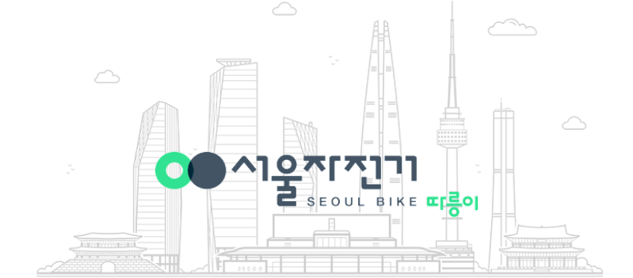
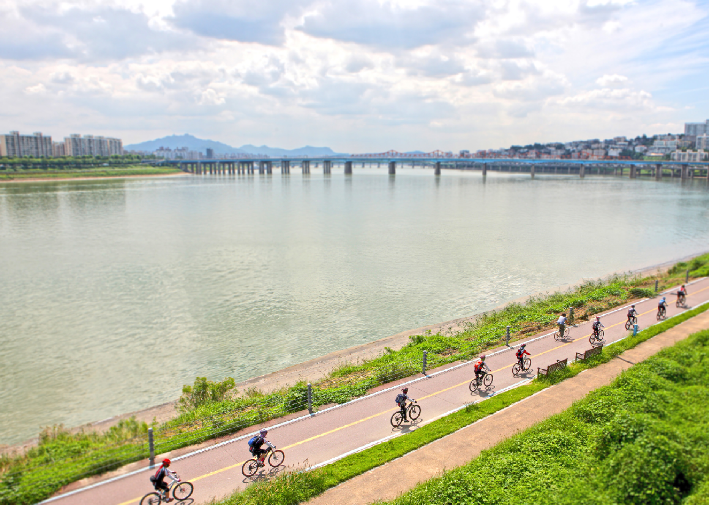
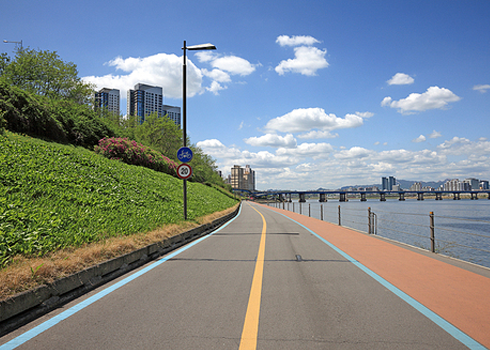
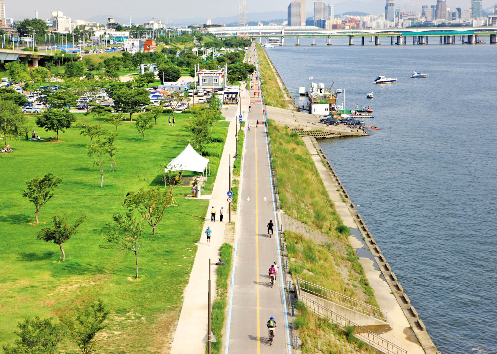
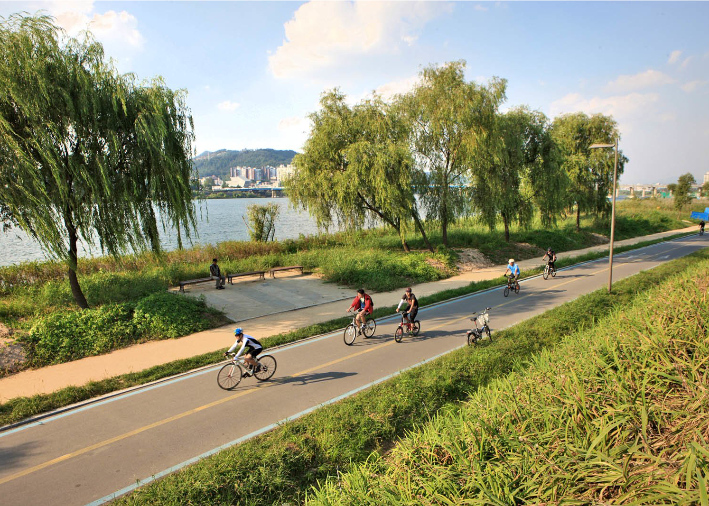

자전거와 함께하는 건강한 도시, 세계적인 자전거 도시 서울
서울시의
교통체증, 대기오염, 고유가 문제를 해결하고
건강한 사회 및 시민들의 삶의 질을 높이고자 마련되었습니다.


건강한 자전거 도시
자전거 이용의 생활화를 통한 시민 건강 증진 실현

깨끗한 자전거 도시
자전거 교통수단 분담률을 향상시켜
CO2 발생 감소 실현

녹색 성장 선도 도시
국가 비전인 “저탄소 녹색성장” 실현

편리한 자전거 도시
곳곳에 배치된 자전거로
이동 편리성 증진 실현